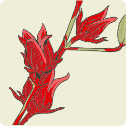

Estas plantas medicinais têm a característica de atuar diretamente nas células de gordura (adipócitos) fazendo com que o tecido adiposo reduza sua capacidade de estocar gordura, induzindo a lipólise através da oxidação preferencial de ácidos graxos como fonte de energia para o organismo. Além disso, eles também parecem ter um papel na modulação dos marcadores inflamatórios.
A lipólise é o processo de degradação dos triglicerídeos armazenados no tecido adiposo, resultando na liberação de ácidos graxos livres e glicerol para serem usados como fonte de energia. Esse processo ocorre principalmente em situações de baixa ingestão energética e é oposto à lipogênese, que corresponde ao armazenamento de gordura. A lipólise é estimulada por hormônios contrarregulatórios da insulina, como o glucagon e as catecolaminas.
Plantas medicinais podem ser utilizadas em pacientes com dificuldade de perder peso mesmo com restrição calórica e com grande circunferência abdominal. Exemplos de plantas medicinais com ação lipolítica e anti-inflamatória:
Curcuma longa (Zingiberaceae)
(açafrão-da-terra, cúrcuma)

Hibiscus sabdariffa (Malvaceae)
(hibisco, vinagreira,
rosélia)
Centella asiatica (Apiaceae)
(centelha)